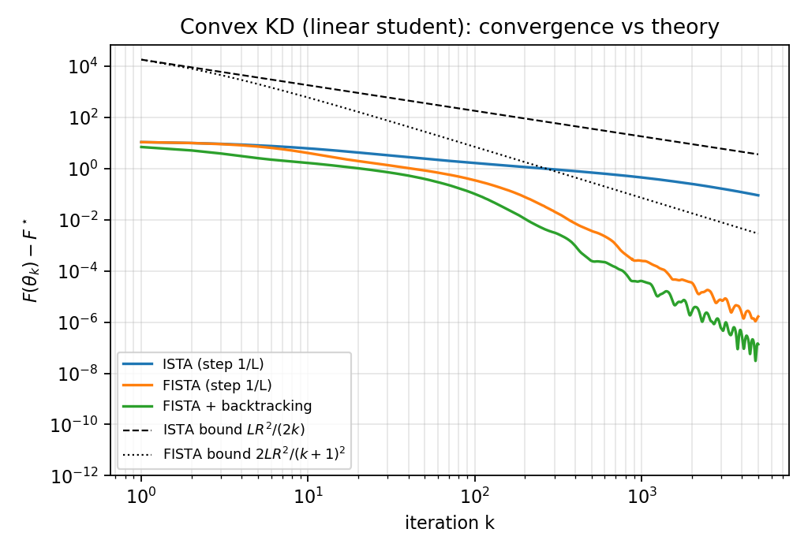
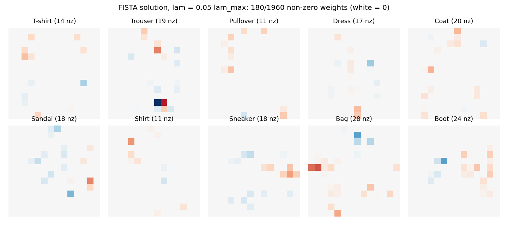
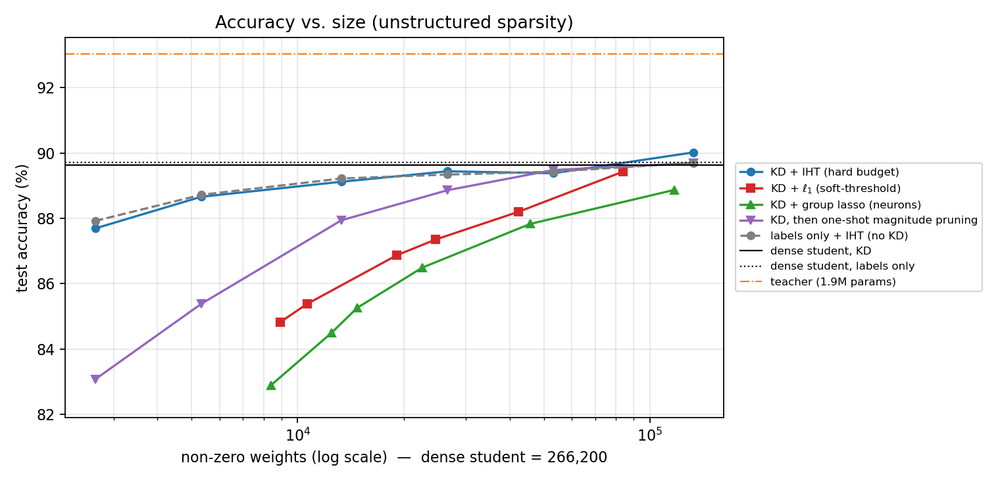
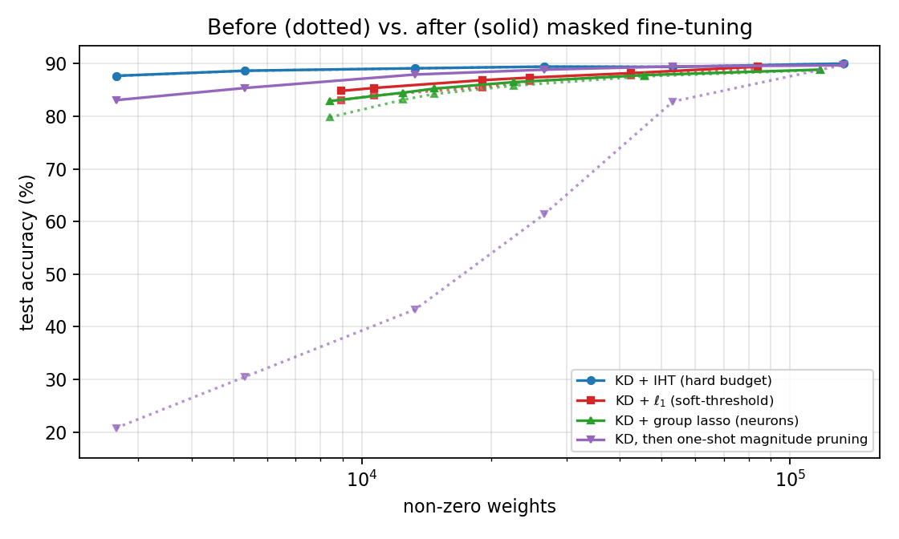
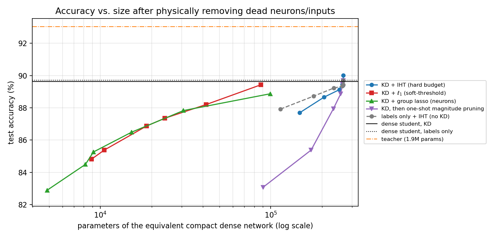
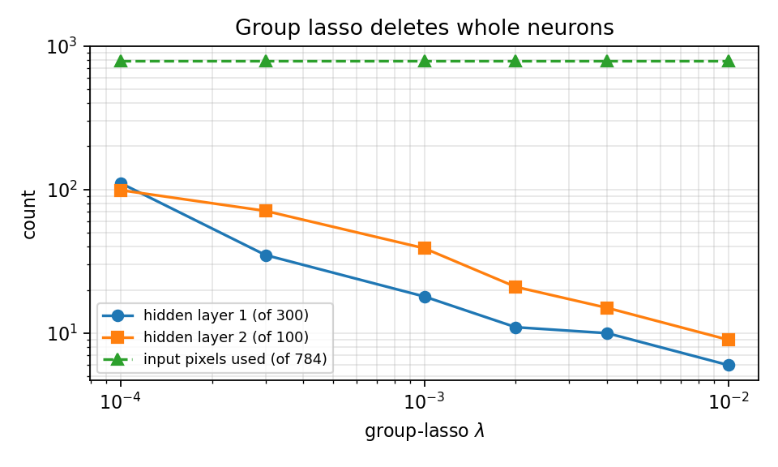
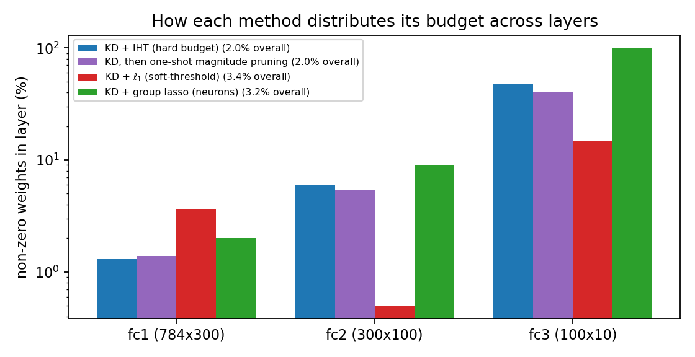
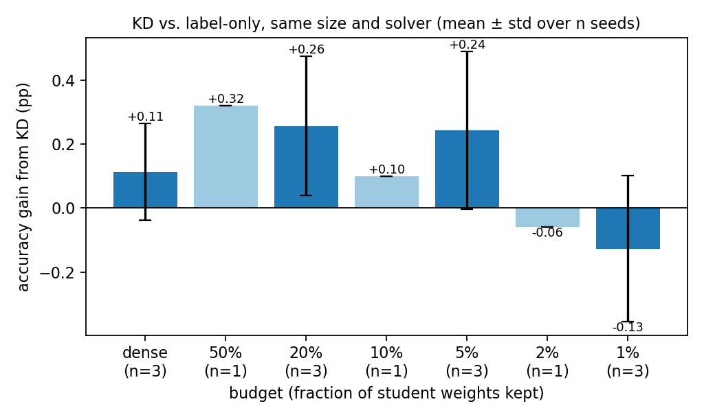
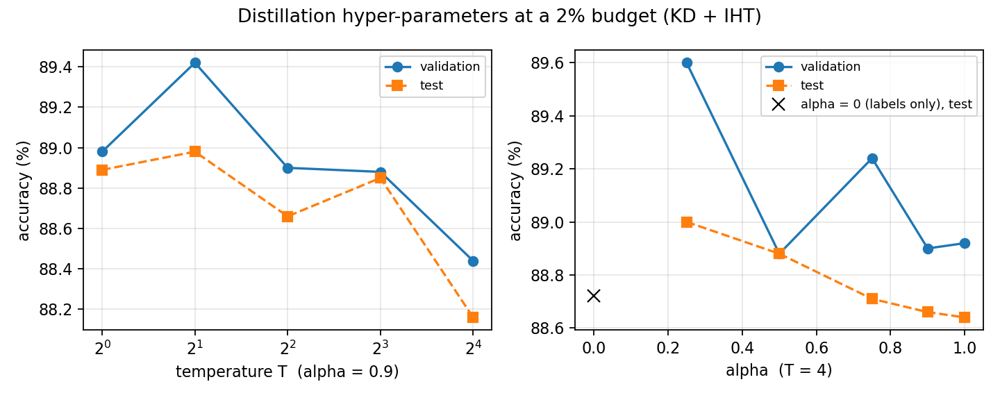
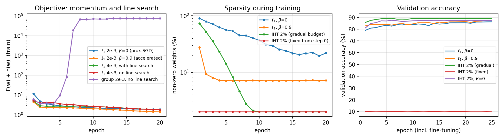

Abstract. We compress a 1.87M-parameter convolutional teacher into a 266k-parameter multilayer-perceptron student by knowledge distillation (KD), and impose an explicit budget on the number of non-zero student weights. The budget problem $\min_w F(w)\ \text{s.t.}\ \|w\|_0\le k$ is combinatorial, so we solve three tractable versions with one algorithm, stochastic accelerated proximal gradient with a backtracking line search: an $\ell_1$ relaxation (soft-thresholding), the exact budget (iterative hard thresholding, IHT) and a group lasso that removes whole neurons (block soft-thresholding). On a convex special case our FISTA solver matches the cvxpy optimum to an objective gap of $1.7\times10^{-6}$ and is 16× faster. On Fashion-MNIST, KD + IHT keeps 1% of the weights at 87.7% accuracy (dense student: 89.6%), beating prune-after-training by 4.6 points at that budget. Measured instead by the size of the equivalent dense network, the $\ell_1$ and group-lasso solutions are 30–55× smaller. The distillation signal itself adds only 0.1–0.3 points at moderate budgets and nothing at 1–2%, which we measured over three random seeds.
1. Problem Statement and Motivation
Accurate neural networks are often too large for the devices that need them most: phones, microcontrollers and embedded sensors have kilobytes to megabytes of memory and tight energy budgets. Two families of methods address this. Knowledge distillation [1] trains a small student to reproduce the output probabilities of a large, accurate teacher. The teacher's softened probabilities (for example "97% shirt, 2% T-shirt, 0.01% sneaker") say which wrong classes are close to the right one, and this is extra information that hard labels do not carry. Pruning and sparsification [5, 7] set most of a network's weights to exactly zero.
Distillation alone picks the student's architecture but does not control how many parameters it actually needs. Pruning is usually applied after training, as a heuristic. We treat compression as one optimisation problem instead: train the student to match the teacher, subject to a hard budget on its number of non-zero parameters. Writing the problem down explicitly lets us
use well-understood algorithms (proximal gradient methods [3, 4]) whose individual steps can be derived and checked;
compare a convex relaxation ($\ell_1$), the exact non-convex constraint ($\ell_0$) and a structured penalty (group lasso) within a single solver; and
study the accuracy-versus-size trade-off as the budget is varied, including whether distillation still helps when the student is very small.
2. Mathematical Formulation
2.1 Variables and data
The decision variable is the vector of student parameters $w\in\mathbb{R}^d$. In our experiments these are the weights and biases of an MLP with layers 784–300–100–10: $d = 266{,}610$, of which $266{,}200$ are weights and 410 are biases. The data are training pairs $(x_i,y_i)_{i=1}^N$ with $N=55{,}000$ and fixed teacher logits $z^t(x_i)\in\mathbb{R}^{10}$. The student produces logits $z^s(x_i;w)$. For a temperature $T>0$ we write $p^{(T)}(z)=\mathrm{softmax}(z/T)$.
2.2 Objective: the distillation loss
$$F(w)=\frac1N\sum_{i=1}^N\Big[\underbrace{\alpha\,T^2\,\mathrm{KL}\big(p^{(T)}(z^t_i)\,\big\|\,p^{(T)}(z^s_i(w))\big)}_{\text{match the teacher}}+\underbrace{(1-\alpha)\,\mathrm{CE}\big(y_i,\,p^{(1)}(z^s_i(w))\big)}_{\text{match the label}}\Big]$$
Here $\alpha\in[0,1]$ mixes the two terms, and $\alpha=0$ is ordinary label training. The factor $T^2$ compensates for the $1/T$ in the gradient of the softened KL term with respect to the logits, $\nabla_{z^s}\mathrm{KL}=\tfrac1T(p^{(T)}_s-p^{(T)}_t)$, so the term keeps the same weight whatever $T$ is [1]. $F$ is smooth but non-convex in $w$, because the student is a neural network.
where $w_{\mathcal W}$ are the weights (biases are not counted, since they make up 0.15% of the parameters) and $\|\cdot\|_0$ counts non-zeros. The constraint is combinatorial: choosing which $k$ of $266{,}200$ weights may be non-zero is a subset-selection problem, which is NP-hard in general even for convex $F$. We therefore solve three tractable versions, all of the form smooth $F$ plus a non-smooth term $h$:
formulation
non-smooth term $h(w)$
controls size via
(P1) $\ell_1$ relaxation
$\lambda\|w_{\mathcal W}\|_1$
penalty $\lambda$ (indirect)
(P2) exact budget
$\iota_{\{\|w_{\mathcal W}\|_0\le k\}}(w)$ (0 inside the set, $+\infty$ outside)
(P1) is convex in $h$. On the box $\|w\|_\infty\le1$, $\|w\|_1$ is the convex envelope of $\|w\|_0$, and it produces exact zeros [6]. (P2) is the original constraint written as an indicator function. In (P3) each group $g$ is the set of incoming weights plus the bias of one hidden neuron (one row of a weight matrix). If a group is zero, the neuron outputs a constant and can be removed, so (P3) gives structured sparsity: a smaller dense network rather than a sparse matrix. The factor $\sqrt{|g|}$ is the usual normalisation that stops groups of different sizes (785 vs 301 entries) from being penalised unequally [8]. The output layer is not grouped, since removing an output neuron would remove a class.
2.4 A convex special case for verification
If the student is linear, $z^s_i=Wx_i+b$, then both the KL term and the cross-entropy are a log-sum-exp minus a linear function of $(W,b)$, so $F$ is convex, and (P1) becomes a convex problem whose global optimum can be computed with an off-the-shelf solver. We use this case to check our solvers and their convergence rates (Section 3.4, Section 4.1).
3. Methodology and Solver Details
3.1 Proximal gradient descent
Plain gradient descent cannot handle $h$: $|w_j|$ is not differentiable at 0, which is exactly where we want the weights to end up, and the indicator in (P2) is not even continuous. Proximal gradient methods [3, 4] split the two parts. They take a gradient step on the smooth part, then a proximal step on the non-smooth part:
The prox finds the point closest to the gradient step that also keeps $h$ small. For an indicator function it reduces to Euclidean projection, so (P2) is projected gradient descent. For all three of our terms the prox has a closed form, so each iteration costs about as much as one gradient step:
Soft-thresholding ($\ell_1$): $\ [\mathrm{prox}]_j=\mathrm{sign}(v_j)\max(|v_j|-\eta\lambda,0)$. The problem separates by coordinate, and setting the subgradient to zero gives three cases. Entries with $|v_j|\le\eta\lambda$ become exactly 0, and the others shrink by $\eta\lambda$. This is the step of ISTA.
Hard-thresholding ($\ell_0$ budget): keep the $k$ entries of largest $|v_j|$ and set the rest to zero, which is the Euclidean projection onto the (non-convex) $k$-sparse set. Iterating it gives IHT [9]. The budget is global over all layers, so the optimiser decides how to split it between layers. We select indices with topk rather than by comparing against a threshold value, so ties can never let more than $k$ weights survive.
Block soft-thresholding (group lasso): $\ v_g\max\!\big(1-\eta\lambda\sqrt{|g|}/\|v_g\|_2,\,0\big)$. A group either shrinks towards zero as a whole or becomes exactly zero.
A unit test (tests/test_prox.py) checks numerically that each closed form is the minimiser: 2,000 random perturbations of the computed prox all have a higher prox objective.
3.2 Acceleration
We use the extrapolated (FISTA-style) iteration [3]:
On the convex problem we use the exact FISTA weights $\beta_k=(t_{k-1}-1)/t_k$ with $t_k=\tfrac12\big(1+\sqrt{1+4t_{k-1}^2}\big)$. These give the optimal $O(1/k^2)$ rate for first-order methods, compared with $O(1/k)$ for ISTA ($\beta_k=0$). On the neural network the problem is non-convex and the gradients are stochastic, so the FISTA guarantees no longer hold. There we use a constant $\beta=0.9$, which is Nesterov-style momentum. Because the momentum is applied to the iterates and the prox is applied last, every iterate $w^{k}$ satisfies the sparsity pattern exactly; with IHT, every iterate after the budget schedule (Section 3.3) satisfies $\|w\|_0\le k$.
3.3 Step sizes, line search and budget schedule (non-convex case)
Stochastic gradients. $\nabla F$ is estimated on mini-batches of 128 images with PyTorch's automatic differentiation. Autograd only supplies the gradient. The update, extrapolation, step-size rule, line search and every prox are our own code; torch.optim is not used for the student.
Step-size schedule. $\eta_k$ grows linearly over the first epoch (warm-up), then follows a cosine decay from $\eta_{\max}=0.05$ to 0. A decreasing step is needed for stochastic gradients, whose noise does not vanish. The threshold $\eta_k\lambda$ in soft-thresholding then decays as well, which is what $\mathrm{prox}_{\eta h}$ prescribes.
Backtracking line search. The scheduled $\eta_k$ is only an upper bound. A step is accepted only if the quadratic upper model holds on the current mini-batch,
$$F_B(w^{+})\le F_B(y)+\langle\nabla F_B(y),w^{+}-y\rangle+\tfrac1{2\eta}\|w^{+}-y\|^2 ,$$
and otherwise $\eta$ is halved and the step is recomputed (Beck–Teboulle backtracking [3], applied per mini-batch). The condition holds automatically when $\eta\le 1/L_{\text{local}}$. We added the line search after fixed-step runs with strong penalties blew up (Section 4.6).
Gradual budget for IHT. Instead of imposing the final $k$ at step 0, the budget is tightened along $k_t=k+(d-k)(1-t/t_r)^3$ over the first half of training ($t_r$ = 50% of iterations) [10], and then held at $k$.
Debiasing. Soft-thresholding shrinks every surviving weight by $\eta\lambda$, which biases the solution towards zero. After every sparse method we therefore freeze the support and train the surviving weights for 5 more epochs ($\eta_{\max}=0.01$). This step is the prox of the indicator of a fixed subspace, $w\mapsto w\odot m$, so it is the same solver with a different $h$. It is the "relaxed lasso" idea [11]. All methods get the same fine-tuning, and we also report accuracy before it.
3.4 Convex check: solver, constants and reference
For the linear student we use 500 training images, average-pooled to $14\times14$ (196 features), with the teacher's soft targets at $T=4$, $\alpha=0.9$. This version is written in NumPy (float64) with a hand-derived gradient,
$\ \partial F/\partial z_i=\tfrac1n\big[\alpha T\,(p^{(T)}(z_i)-q_i)+(1-\alpha)(p^{(1)}(z_i)-y_i)\big]$, and does not use autograd. A central finite-difference test confirms the gradient (relative error $5\times10^{-10}$). The Lipschitz constant follows from the bound $\lambda_{\max}\big(\mathrm{diag}(p)-pp^\top\big)\le\tfrac12$ on the Hessian of log-sum-exp. In the KD term the $T^2$ cancels the $1/T^2$ from $z/T$, so
$$L=\frac{\|[X\ \ \mathbf 1]\|_2^2}{2n}=40.35,\qquad\text{independent of }T\text{ and }\alpha.$$
We set $\lambda=0.05\,\lambda_{\max}$, where $\lambda_{\max}=\|\nabla_W F(0,b^\star)\|_\infty=0.529$ is the smallest penalty for which $W=0$ is optimal. We run ISTA and FISTA with step $1/L$, and FISTA with backtracking that starts from $L/50$. The reference optimum comes from cvxpy [12] with the interior-point solver Clarabel [13], which handles log-sum-exp through exponential cones.
3.5 Experimental setup
Data: Fashion-MNIST [14], 28×28 grey-scale clothing images in 10 classes. The 60k training images are split into 55k train / 5k validation with a fixed seed, and the test set has 10k images. Hyper-parameters are compared on validation; the test set is used only for reporting. We chose Fashion-MNIST over MNIST because almost any method reaches ~98% on MNIST, which would hide the differences between methods.
Teacher: a CNN with four 3×3 convolutions (64, 64, 128, 128 channels) with batch-normalisation and two max-pools, followed by a 256-unit fully connected layer with dropout: 1,867,850 parameters. It is trained for 15 epochs with standard SGD (Nesterov momentum, weight decay $5\times10^{-4}$, random shifts and flips). Test accuracy: 93.04%. The teacher is not part of the optimisation study, and its logits on the training set are computed once and reused in every run.
Student: the MLP 784–300–100–10 ("LeNet-300-100" [15], the standard pruning benchmark). Using an architecture different from the teacher shows that the transferred knowledge is in the outputs, not in the weights.
Training: 20 epochs plus 5 fine-tuning epochs, $T=4$, $\alpha=0.9$, $\beta=0.9$. Every run starts from the same random initialisation (seed 0), so differences come from the method, not from the initial weights.
Methods compared: (a) dense student, labels only; (b) dense student, KD; (c) KD, then one-shot global magnitude pruning [5] plus the same fine-tuning; (d) KD + $\ell_1$; (e) KD + IHT; (f) KD + group lasso; and (g) IHT with labels only, to isolate the effect of KD. The budgets are $k/d\in\{50,20,10,5,2,1\}\%$, and the $\lambda$ grids were chosen from short calibration runs to cover a similar range of densities.
Size measures: (i) the number of non-zero weights, with sparse storage counted at 8 bytes per non-zero (4-byte value + 4-byte index) plus dense biases; and (ii) the compact dense size. For (ii) we physically delete unused input pixels, neurons with no outgoing weights, and neurons with no incoming weights (folding their constant output $\mathrm{relu}(b_j)$ into the next layer's bias), then count the parameters of the remaining dense network. We verified that the compact network reproduces the sparse network's logits up to floating-point error.
Ablations (at a 2% budget unless stated): $T\in\{1,2,4,8,16\}$, $\alpha\in\{0.25,\dots,1\}$, $\beta\in\{0,0.9\}$, gradual vs fixed budget, and line search on/off. The KD-vs-labels comparison is repeated with 3 seeds at 100%, 20%, 5% and 1%.
Compute: one laptop GPU (RTX 3050); 64 runs of 40–100 s each.
4. Results, Analysis and Discussion
4.1 Convex check: the solvers are correct and follow theory
method
final objective
gap to $F^\star$
non-zeros in $W$
time
cvxpy (Clarabel, interior point)
5.999707
reference
181 / 1960
99.3 s
ISTA, step $1/L$, 5000 it.
6.089266
$9.0\times10^{-2}$
291
6.0 s
FISTA, step $1/L$, 5000 it.
5.999709
$1.7\times10^{-6}$
180
6.2 s
FISTA + backtracking, 5000 it.
5.999707
$1.4\times10^{-7}$
—
11.9 s
Table 1. Linear student, $n=500$, $p=196$, $\lambda=0.05\lambda_{\max}$.
FISTA reaches the cvxpy optimum: its weights differ from cvxpy's by 0.4% (relative $\ell_2$), and the two sets of non-zeros agree with a Jaccard overlap of 0.994. All three curves stay below their theoretical bounds $LR^2/(2k)$ and $2LR^2/(k+1)^2$ (Fig. 1). ISTA's error falls like $1/k$, while FISTA's falls much faster and is non-monotone, which is known behaviour for FISTA. Backtracking settles at $L\approx12.9$, about three times smaller than the worst-case bound 40.35, so it takes longer steps and is the fastest: it reaches a $10^{-6}$ gap at iteration 2,658. Two further observations:
The interior-point solver needed 99 s for this small problem and did not finish within 30 minutes at $n=2000$, whereas a FISTA iteration costs one matrix product. First-order proximal methods scale much better, which is why they are the only realistic option for the network.
Proximal methods produce exact zeros, while the interior-point solution contains small values around $10^{-9}$ that must be thresholded. The sparse linear student uses only 11–28 of the 196 pixels per class (Fig. 2), so the $\ell_1$ term performs feature selection.

Figure 1. Optimality gap vs. iteration on the convex problem (log–log), with the ISTA and FISTA bounds.

Figure 2. FISTA solution: the weights of each class over the 14×14 pixel grid. White = exactly zero.
4.2 Accuracy vs. number of non-zero weights
budget (non-zero weights)
KD + IHT
labels only + IHT
KD, then prune + fine-tune
prune, before fine-tune
100% (dense, 266,200)
89.63
89.71
—
—
50% (133,100)
90.02
89.70
89.69
89.78
20% (53,240)
89.38
89.43
89.48
82.81
10% (26,620)
89.44
89.34
88.86
61.36
5% (13,310)
89.12
89.22
87.94
43.30
2% (5,324)
88.66
88.72
85.38
30.48
1% (2,662)
87.69
87.92
83.07
20.76
Table 2. Test accuracy (%) at equal numbers of non-zero weights (seed 0). Teacher: 93.04%.

Figure 3. Accuracy vs. non-zero weights for all methods. The $\ell_1$ and group-lasso points come from the $\lambda$ sweep.
Large compression at a small cost. KD + IHT keeps 1% of the weights and loses 1.9 points (89.63 → 87.69). Stored as a sparse matrix the model needs 22.4 KB instead of 1,041 KB dense (46× smaller). At 5% it loses only 0.5 points.
Optimising under the constraint beats "train, then cut". At equal size, IHT beats one-shot magnitude pruning by +1.2 points at 5%, +3.3 at 2% and +4.6 at 1%, and the gap widens as the budget shrinks. Immediately after cutting, the pruned network is close to random guessing (20.8% at 1%), and 5 epochs of fine-tuning recover only part of the loss. IHT instead chooses the support while training, so the remaining weights adapt to the sparsity pattern.
Mild sparsity regularises. At 50% the sparse student is slightly better than the dense one (90.02 vs 89.63).
Counted in non-zeros, $\ell_1$ and group lasso are worse than IHT (for example, $\ell_1$ at 9.3% density gives 87.35% vs IHT at 10% with 89.44%). One reason is shrinkage bias: fine-tuning adds +0.4 to +1.8 points to $\ell_1$ and up to +3.1 to group lasso, but nothing to IHT (Fig. 4). The main reason, however, is where these methods put their non-zeros, discussed next.

Figure 4. Test accuracy before (dotted) and after (solid) the masked fine-tuning step.
4.3 Accuracy vs. real network size: structured sparsity
A zero inside a weight matrix saves memory only if the model is stored and run with sparse formats and kernels. On ordinary dense hardware, what reduces cost is removing neurons. Measured by the compact dense size, the ranking reverses:
model
test %
non-zero weights
neurons left (h1, h2)
compact dense params
dense student (KD)
89.63
266,200
300, 100
266,610
KD + IHT, 1%
87.69
2,662
219, 83
147,653 (1.8×)
KD + $\ell_1$, $\lambda=2\!\times\!10^{-4}$
89.43
83,971
102, 67
87,651 (3.0×)
KD + $\ell_1$, $\lambda=8\!\times\!10^{-3}$
84.82
8,920
11, 11
8,887 (30×)
KD + group, $\lambda=2\!\times\!10^{-3}$
85.26
14,768
11, 21
9,107 (29×)
KD + group, $\lambda=10^{-2}$
82.89
8,404
6, 9
4,873 (55×)
Table 3. Structured size: parameters of the equivalent network after removing dead inputs and neurons.

Figure 5. Accuracy vs. parameters of the compact dense network.
IHT spreads its budget thinly. Its 1% model still uses 219 + 83 neurons and needs 148k dense parameters, because the non-zeros are scattered over almost every row. $\ell_1$ and group lasso concentrate their weights in a few neurons and give networks that are genuinely 30–55× smaller. Which formulation is best therefore depends on deployment: IHT for sparse storage or sparse kernels, $\ell_1$ or group lasso for dense hardware.
Plain $\ell_1$ removes neurons almost as well as group lasso, and the two curves overlap in Fig. 5. In a ReLU network, once $\ell_1$ has shrunk most of a neuron's input weights, the neuron contributes little to the loss, so its remaining weights are also driven to zero. Group lasso reaches the smallest network (6 + 9 neurons). Its number of surviving neurons falls steadily as $\lambda$ grows (Fig. 6).
Limitation: no input pixels were removed (784 used), because our groups contain only each neuron's incoming weights. Adding groups for the columns of the first layer (one per pixel) would also select input features.

Figure 6. Group lasso: neurons and input pixels still in use as a function of $\lambda$.
4.4 How the budget is distributed across layers
Because the IHT budget is global, the optimiser chooses the per-layer density itself. At 2% it keeps 47% of the small output layer (100×10), 6% of the middle layer and only 1.3% of the 784×300 input layer (Fig. 7). The layers with few weights, where each weight matters most, keep the largest share, which a fixed per-layer percentage could not achieve. $\ell_1$ behaves differently: it empties the middle layer (0.5%) and keeps relatively more of the first, which matches the "few neurons, dense rows" structure seen in Section 4.3.

Figure 7. Share of each layer's weights that remain non-zero, at roughly 2–3% overall density.
4.5 Does distillation help under a budget?
budget
KD + IHT
labels only + IHT
gain from KD (points)
dense
89.87 ± 0.18
89.76 ± 0.04
+0.11 ± 0.15
20%
89.65 ± 0.22
89.39 ± 0.12
+0.26 ± 0.22
5%
89.35 ± 0.20
89.10 ± 0.11
+0.24 ± 0.25
1%
87.83 ± 0.18
87.96 ± 0.07
−0.13 ± 0.23
Table 4. Test accuracy, mean ± standard deviation over 3 seeds. Each pair of runs uses the same initialisation.
The benefit of distillation is small: about +0.25 points at moderate budgets, roughly one standard deviation, and none at 1%. With a single seed we could have reported either sign, so the repeated runs were necessary. The temperature and $\alpha$ ablation (Fig. 9) points the same way. All settings lie within about 0.8 points of each other. $T=2$ is best on validation and $T=16$ is clearly worst, and a smaller weight on the teacher ($\alpha=0.25$) does slightly better than $\alpha=0.9$. Most of these differences are close to the seed-to-seed noise. We see three reasons the gain is small:
The teacher has little extra to give. It is only 3.3 points better than the dense student, so its soft targets add little beyond the labels.
Capacity and architecture gap. A CNN's predictions rely on translation-invariant features that an MLP cannot represent, and it is known that a student too different from its teacher gains less from distillation [16, 17].
At 1–2% the student under-fits even the labels, so the finer detail in the soft targets has nowhere to go.
Our conclusion is that KD is not guaranteed to help, and its benefit shrinks as the student is compressed further. Almost all of the accuracy we retain comes from the optimisation method, not from the distillation signal.

Figure 8. Accuracy gain from KD at equal budget. Dark bars: mean ± std over 3 seeds; light bars: one seed.

Figure 9. Effect of temperature $T$ (left) and mixing weight $\alpha$ (right) at a 2% budget, KD + IHT.
group $\lambda=2\!\times\!10^{-3}$, with / without line search
85.26 / 15.79
fixed step blows up
$\ell_1$ $\lambda=4\!\times\!10^{-3}$, with / without line search
85.38 / 84.90
small difference
Table 5. Solver ablations.
The fixed-budget collapse. Applying the final budget at initialisation keeps $[0,\ 4833,\ 491]$ weights in the three layers: none in the first layer. Standard initialisation scales weights by $1/\sqrt{\text{fan-in}}$, so the 784-input layer starts with the smallest values, and a global top-$k$ by magnitude removes all of it. With the input disconnected the output is constant, and the gradient steps on the first layer are too small to ever enter the top $k$. The gradual schedule avoids this by cutting only after the magnitudes have become meaningful. The size of a weight at initialisation says nothing about its importance.
Line search prevents blow-ups. With a fixed step, strong-penalty runs first trained normally and then, once only 10–20 neurons were left, became unstable: the weights grew to about $10^5$ and accuracy fell to chance level (Fig. 10, left). Few remaining weights carrying all the signal means a much larger local curvature, so a step that was safe early in training now overshoots. Backtracking shrinks $\eta$ only where needed. It averaged 1–2 halvings per step in the middle of those runs and almost none for IHT. Because this changed the solver, every reported experiment was re-run with the line search on.
The result depends on the algorithm as well as on $\lambda$. With $\beta=0$ the same $\ell_1$ penalty gives a three times denser and less accurate model. For a non-convex, stochastic problem the point reached depends on the path taken, which is why we compare methods by the size they achieve rather than by $\lambda$.

Figure 10. Training objective (left), density (middle) and validation accuracy (right) over epochs for the ablation runs.
4.7 Limitations and future work
One dataset and one student architecture; most configurations were run with a single seed (3 seeds only for the KD comparison).
For the non-convex problem we have no convergence guarantee. IHT has guarantees only under restricted-isometry-type conditions [9], which a neural network does not satisfy.
The sizes are counted, not measured as latency on a device.
Natural extensions: groups for input pixels; a CNN student with filter-level group lasso; an intermediate "teacher assistant" [17] to narrow the capacity gap; CIFAR-10.
5. Conclusion
Writing network compression as an explicit optimisation problem and solving it with proximal gradient methods gave a single solver that handles a convex relaxation, the exact $\ell_0$ budget and a structured penalty. The solver is verified against cvxpy and against the theoretical convergence rates on a convex case. On Fashion-MNIST, optimising under the hard budget (IHT) keeps 1% of the student's weights at a 1.9-point accuracy loss and clearly beats pruning after training. When the goal is a smaller dense network, $\ell_1$ and group lasso produce models 30–55× smaller. Two practical details mattered most for the optimisation: a gradual budget (without it the network collapsed) and a backtracking line search (without it strong penalties diverged). Distillation contributed less than expected (≤0.3 points), and its benefit disappeared at the tightest budgets.
References
G. Hinton, O. Vinyals, J. Dean. Distilling the knowledge in a neural network. NIPS Deep Learning Workshop, 2015.
Y. Nesterov. A method for solving the convex programming problem with convergence rate $O(1/k^2)$. Soviet Math. Dokl., 1983.
A. Beck, M. Teboulle. A fast iterative shrinkage-thresholding algorithm for linear inverse problems. SIAM J. Imaging Sciences, 2009.
N. Parikh, S. Boyd. Proximal algorithms. Foundations and Trends in Optimization, 2014.
S. Han, J. Pool, J. Tran, W. Dally. Learning both weights and connections for efficient neural networks. NeurIPS, 2015.
R. Tibshirani. Regression shrinkage and selection via the lasso. J. Royal Statistical Society B, 1996.
W. Wen, C. Wu, Y. Wang, Y. Chen, H. Li. Learning structured sparsity in deep neural networks. NeurIPS, 2016.
M. Yuan, Y. Lin. Model selection and estimation in regression with grouped variables. J. Royal Statistical Society B, 2006.
T. Blumensath, M. Davies. Iterative hard thresholding for compressed sensing. Applied and Computational Harmonic Analysis, 2009.
M. Zhu, S. Gupta. To prune, or not to prune: exploring the efficacy of pruning for model compression. arXiv:1710.01878, 2017.
N. Meinshausen. Relaxed lasso. Computational Statistics & Data Analysis, 2007.
S. Diamond, S. Boyd. CVXPY: a Python-embedded modeling language for convex optimization. JMLR, 2016.
P. Goulart, Y. Chen. Clarabel: an interior-point solver for conic programs with quadratic objectives. arXiv:2405.12762, 2024.
H. Xiao, K. Rasul, R. Vollgraf. Fashion-MNIST: a novel image dataset for benchmarking machine learning algorithms. arXiv:1708.07747, 2017.
Y. LeCun, L. Bottou, Y. Bengio, P. Haffner. Gradient-based learning applied to document recognition. Proc. IEEE, 1998.
J. H. Cho, B. Hariharan. On the efficacy of knowledge distillation. ICCV, 2019.
S. I. Mirzadeh et al. Improved knowledge distillation via teacher assistant. AAAI, 2020.
Code and reproducibility. All code, per-run results (JSON) and figures are in the repository above. Run train_teacher.py, convex_check.py, run_experiments.py and make_plots.py, in that order. Libraries: PyTorch, NumPy, cvxpy + Clarabel, Matplotlib. Parts of the code were written with the help of an AI assistant (Claude); the formulation, the experimental design and the analysis are the team's.